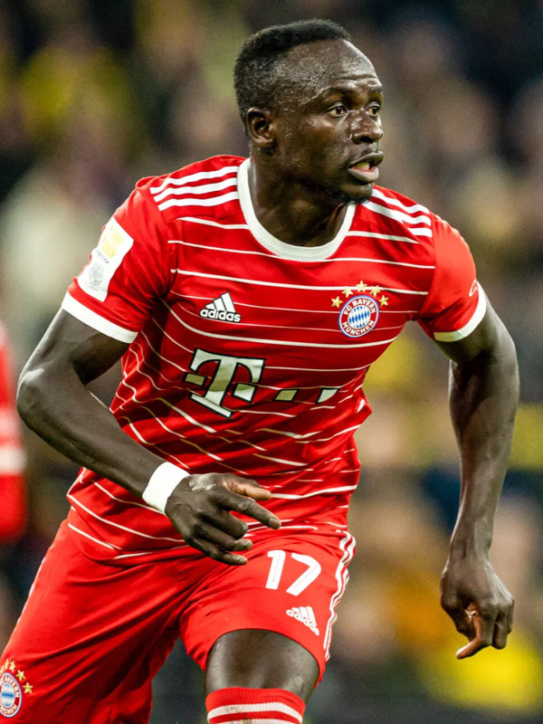

Sadio Mane
Player Information
First Name: Matthijs
Last Name: De Ligt
Number: 4
Date of Birth: August 12, 1999
Age: 23
Height: 189cm / 6'2"
Dominant Foot: Right
Nationality: Netherlands
Positions: CB
Biography
This section is for the biography of Sadio Mane.
Statistics
Statistics for Muller's 2022-23 Bundesliga Season:
- Goals: 4
- Assists: 8
- Starts: 14
- Shots: 25
- Shots on Goal: 15
- Fouls Commited: 4
- Fouls Suffered: 5
- Yellow Cards: 0
- Red Cards: 0
- Offsides: 4
Play Style
Sadio Mane is known as one of the best wingers in world of soccer. He proved it to everyone time and time again in the English Premier League. His style of play heavily relies on his speed, athleticism, and ability to pressure. Coming from the Premier League, Sadio Mane is used to having a longer soccer season than players in most other major leagues. Additionally, the Premier League is infamous as the most physical league. Thus, Mane's success in that league proved him to be a very atheltic player who is conditioned to perform in intense games against strong defenders. Like all world-class wingers, he is very fast and has extraordinary dribbling. What sets his style apart, however, is his ability to pressure. He is exceptional when it comes to cutting off passing lanes and disrupting opposing build-up play. He knows exactly what angle to take when pressuring the defender in order to minimize the number of passing options for the opposition. His endurance allows him to pressure for an entire duration of the game, which helps the team overall performance. However, Mane found himself struggling at Bayern Munich and cannot secure a starting spot despite his reputation. Whether it's because of his age or inability to adapt to the German league, Mane is not able to show the same brilliance as in England. He is usually out-muscled by the defenders and is not able to create chances with his dribbling. Mane is also unable to make runs behind the opposition defense, as he is often found offside or outpaced. Whatever the reason is behind his subpar performances, Bayern fans are hopeful that it's because he is not yet adapted to the German league's playing style. If the reason is his ageing, however, it can prove to be a very unsuccessful transfer by the Bayern Munich board.